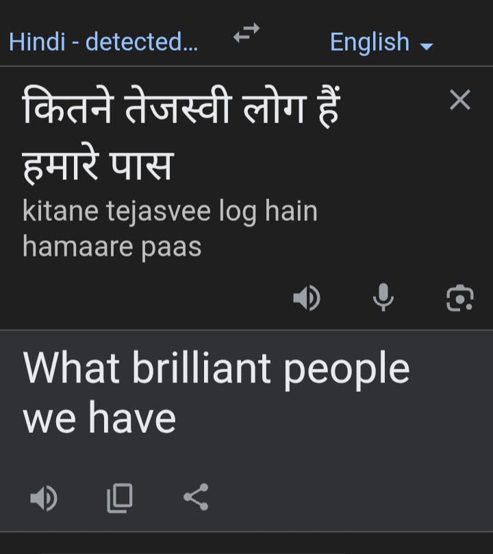
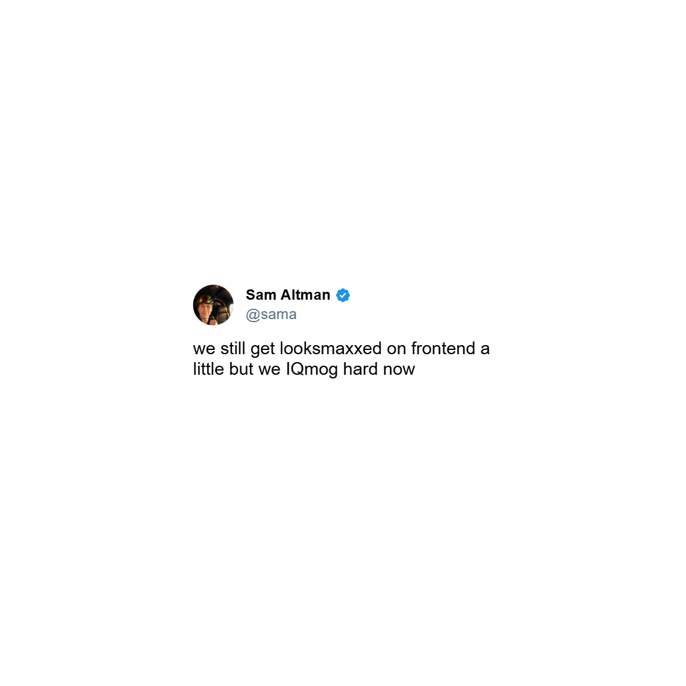

The Language Nobody Taught Us
Meme culture binds us all in one collective box. You can go outside, meet somebody, and if you are looking to find common ground, you can just drop a meme reference in a relatable circumstance, and people will be like, “hell yeah, you’re one of us”.
Say you and your friends want to go on a trip together, so one of your friends suggests going to Kashmir Valley. Now, your other friend says, “mutual funds are subject to market risk,” and suddenly you all burst out laughing. Now, this may sound very strange to someone who hasn’t watched the “Mutual Funds Sahi Hai” ad on TV or any streaming platform, but those who have watched it can connect that going to Kashmir Valley is a punt you take with your life, just like mutual funds. Here, “subject to market risk” was a meme.
Now, just like the scenario above, memes are mostly used to explain circumstances in a funny and light way. Now, if you are an Indian or a Pakistani, you must have seen the famous “mauka mauka” ad, which later on became a meme. The ad showed a Pakistani guy waiting for his cricket team to win against India in ICC tournaments, which basically never happened until 18 June 2017, when we lost the CT final to them, which was honestly pretty messed up to witness as a 10-year-old Indian cricket fan.
This ad is used as a meme for something that people hope will happen but it mostly never does. We (RCB fans) waited for our “mauka mauka” day just like that guy in the ad, hoping every season that this is going to be our season, which eventually turned out to be true in 2025.
Me when asked about my opinion on people who don’t read my blogs:

Google Translate can give you its literal meaning, which basically sounds like Hon. PM is appreciating people, but that’s just the literal meaning. What actually happened at that particular moment was that he was criticizing the fact that the Congress party doesn’t promote young leaders and their new ideas. This is from a Parliament session on 3rd March, 2016.
So now that you know what this actually means, I think you know what I have to say about people who don’t read my blogs.
Now, one thing you must have noticed with the examples so far in this blog is that to understand a meme, you must know what it means and what kind of circumstances it can be related to.
I believe memes are very important for us as a society. They really do play a significant role in shaping our lives. Memes are a language we never agreed to speak formally, yet we do and if you don’t, you are seen as an outcast.
Now, one must think—why do we love memes so much? Are they funny? Do they make it easier to explain stuff? Do they lighten conversations? Well, I think another reason is that they prove the fact that human beings are tribal by nature. Most of us consume the same memes, share the same memes, and laugh at the same memes.
This also varies with people belonging to different tribes,tribes here meaning domains.
For those on tech Twitter:

Sam altman is the ceo of openai and here he's talking about capabilities of chatgpt's coding model .Here, “looksmaxxed” stands for frontend,what you see on your screen when you visit a website while “iqmaxxed” is used for backend, the actual brain of the website that makes it functional.
Looksmaxxing, looksmogged,these terms are mostly used in fitness culture, where people are trying to maximize how they look, but here they are used in tech Twitter for completely different things, and that’s exactly how memes work.
Memes don’t stay confined to a single domain or culture. They keep getting transferred across domains and pick up different meanings.
Now, one thing you must have noticed with the examples so far in this blog is that to understand a meme, you must know what it means and what kind of circumstances it can be related to.
Now, memes, like anything in the world, have their pros and cons. They can be used as tools for fat-shaming, sexualizing, and even to ignite mob lynching. What makes it more worrying is that most of the social media pages that do this have “dank memes” or some religious slogan in their bio, using humor as a cover for their way to dehumanize people. But again, just like anything else in the world, it’s a misuse of the tool, not the tool itself.